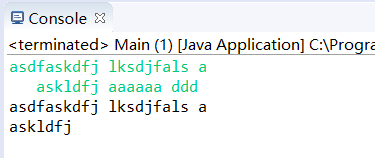
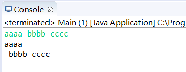

Java中方法next()和nextLine()的区别
原创
Java中Scanner类中的方法next()和nextLine()都是吸取输入台输入的字符，区别：
- next()不会吸取字符前/后的空格/Tab键，只吸取字符，开始吸取字符（字符前后不算）直到遇到空格/Tab键/回车截止吸取；
- nextLine()吸取字符前后的空格/Tab键，回车键截止。
方法的连用_files/copycode.gif)
1 import java.util.Scanner; 2 import java.util.Vector; 3 4 public class Main{ 5 public static void main(String args[]) { 6 Scanner reader=new Scanner(System.in); 7 String s1=reader.nextLine(); 8 String s2=reader.next(); 9 System.out.println(s1); 10 System.out.println(s2); 11 } 12 }
运行样例：

可以看到next()只吸取了askldfj字符，空格后面的都舍弃了!
1 import java.util.Scanner; 2 import java.util.Vector; 3 4 public class Main{ 5 public static void main(String args[]) { 6 Scanner reader=new Scanner(System.in); 7 String s1=reader.next(); 8 // String ss=reader.nextLine(); 9 String s2=reader.nextLine(); 10 System.out.println(s1); 11 System.out.println(s2); 12 } 13 }
将next()和nextLine()换个顺序
运行样例：

只输入了aaaa bbbb cccc，系统自动输出了两行：
aaaa
bbbb cccc
因为aaaa后面有个空格，next是不需要的，所以next读取结束，剩菜剩饭 bbbb cccc被nextLine捡了
解决方法是加上上面代码注意的 nextLine()
import java.util.Scanner; public class Main { public static void main(String[] args) { Scanner reader=new Scanner(System.in); String s1=reader.next(); String s2=reader.nextLine(); System.out.println(s1); System.out.println(s2); } }
abcdefg
abcdefg
//剩下两行
输入abcdefg后回车程序已经结束了，然后输出了abcdefg和两行换行，原因是因为nextLine吸收了next后的回车。所以要十分注意的是，两个nextLine尽量不要连在一起。而使用next不会出现这种情况，因为next吸取的第一个要求的是字符，最后一个要求是空格、Tab键、回车键。
20:25:47
2018-08-14
方法的连用_files/wechat.png)
方法的连用_files/xml.gif)
【推荐】阿里云携近百家科技企业向你发来面试邀请
【推荐】未知数的距离，毫秒间的传递，声网与你实时互动
【推荐】5天实战！技术大咖带你玩转实时数仓，赢定制T恤
【推荐】了不起的开发者，挡不住的华为，园子里的品牌专区
【推荐】精品问答：精品问答：Python 技术 1000 问
· java中nextLine()和next()的区别
· java中nextLine()和next()的区别
· Scanner中next（）和nextline（）读取字符串方法和区别
· Java基础之Scanner类中next()与nextLine()方法的区别
· Java中关于nextInt()、next()和nextLine()的理解
» 更多推荐...
· 我，活在中关村的夜里
· 理想的投资，就是用投资实现了理想
· 从金融到企业服务，京东数科值不值2000亿元？
· 京东向左，天猫向右，有人向下
· B站想破圈 UP主想恰饭
» 更多新闻...